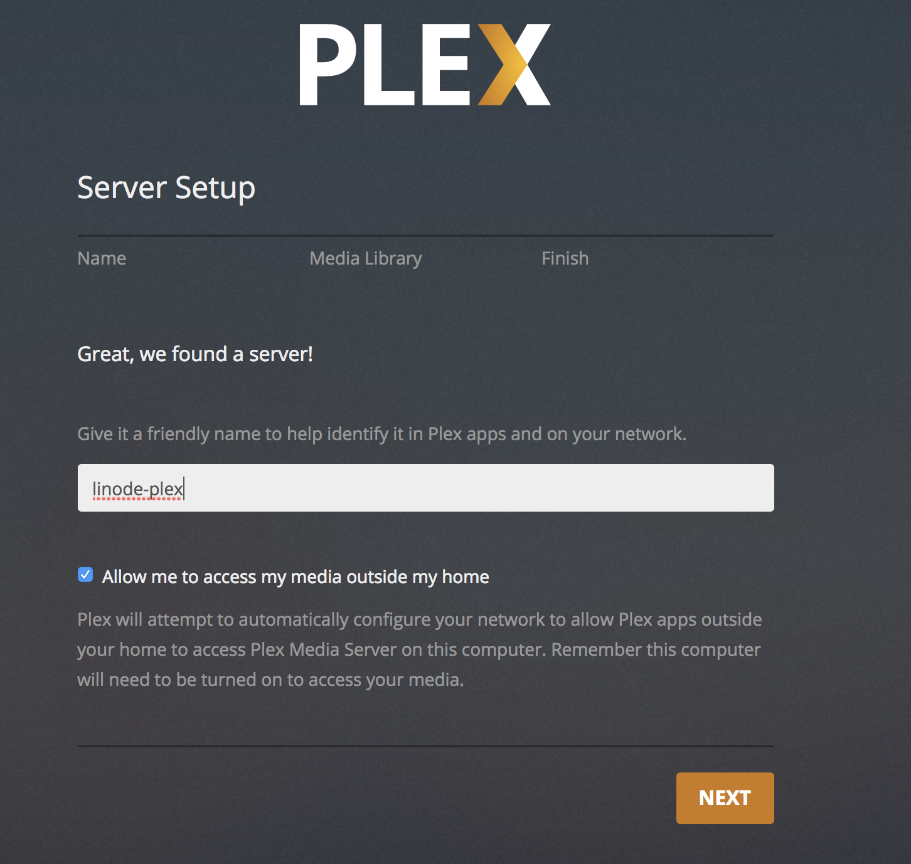
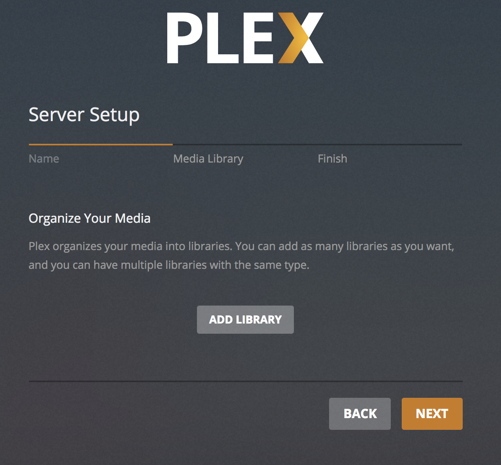
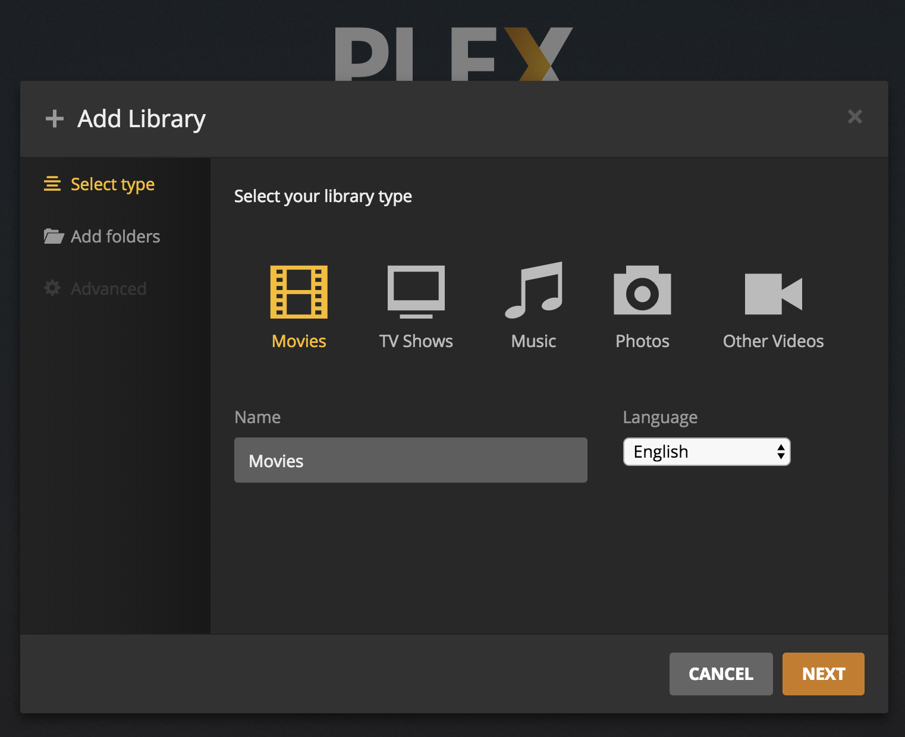
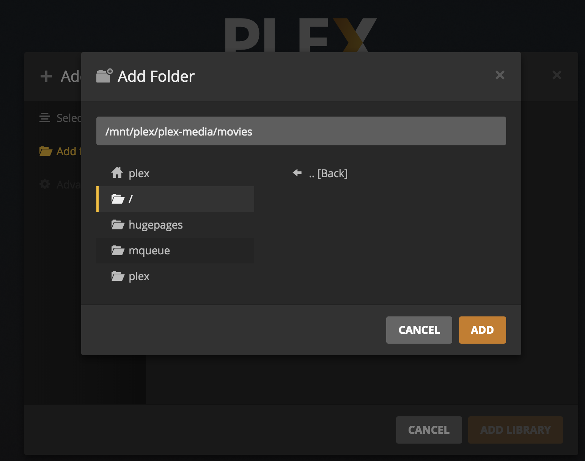
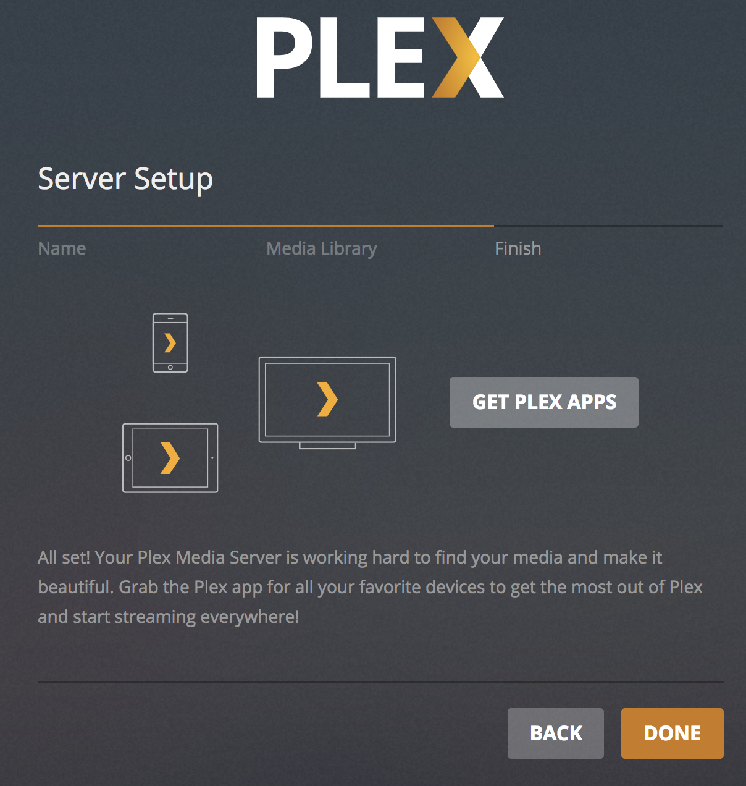
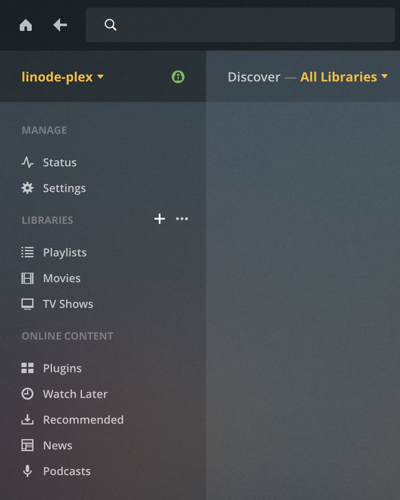
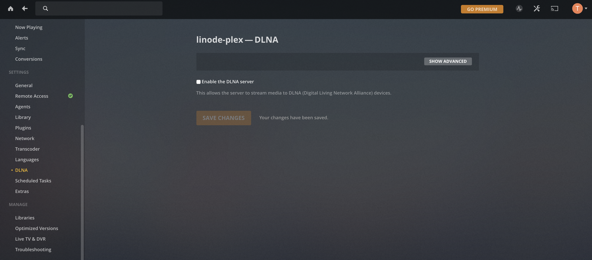
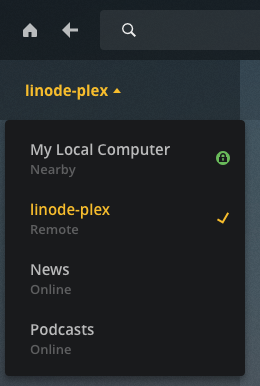
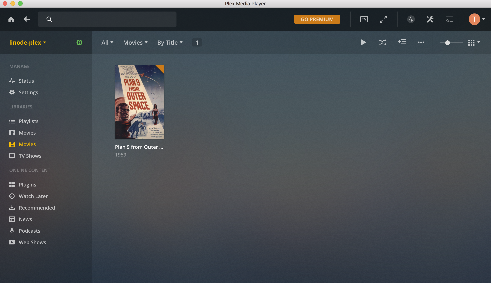
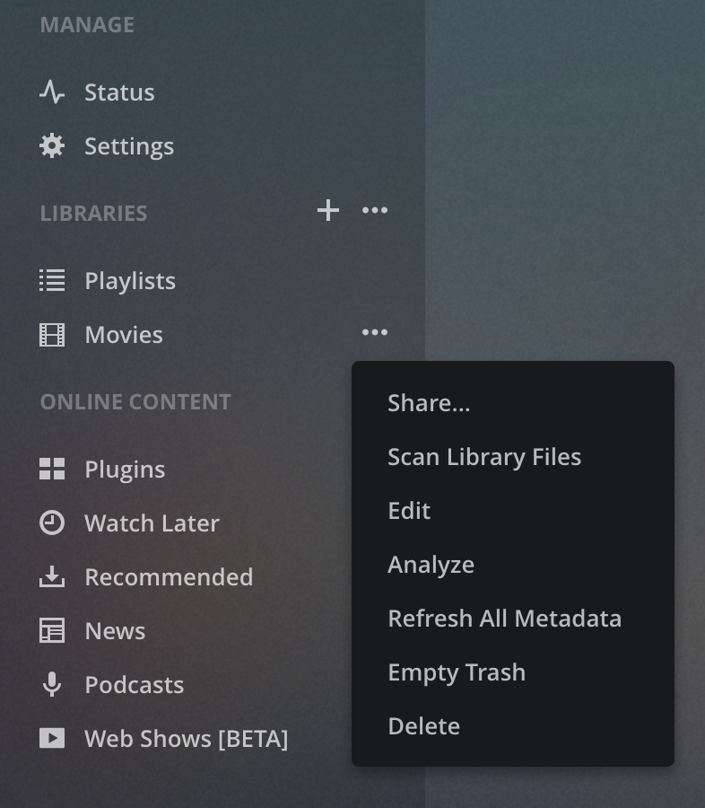

Install Plex Media Server on Ubuntu 18.04 Using Salt Masterless
Updated by Linode Contributed by Linode
Dedicated CPU instances are available!Linode's Dedicated CPU instances are ideal for CPU-intensive workloads like those discussed in this guide. To learn more about Dedicated CPU, read our blog post. To upgrade an existing Linode to a Dedicated CPU instance, review the Resizing a Linode guide.
Plex is a media server that allows you to stream video and audio content that you own to many different types of devices. In this guide you will learn how to use a masterless Salt minion to set up a Plex server, attach and use a Block Storage Volume, and how to connect to your media server to stream content to your devices.
Before You Begin
Familiarize yourself with our Getting Started guide and complete the steps for setting your Linode’s hostname and timezone.
Follow the steps in the How to Secure Your Server guide.
Update your system:
sudo apt-get update && sudo apt-get upgradeYou will need to create a Block Storage Volume and attach it to your Linode. You will format and mount the drive as part of this guide. This volume will be used to store your media, so you should pick a size that’s appropriate for your media collection, though you can resize the volume later if you need more storage. For more on Block Storage, see our How to Use Block Storage guide.
Plex requires an account to use their service. Visit the Plex website to sign up for an account if you do not already have one.
NoteThe steps in this guide require root privileges. Be sure to run the steps below with thesudoprefix. For more information on privileges, see our Users and Groups guide.
Prepare the Salt Minion
On your Linode, create the
/srv/saltand/srv/pillardirectories. These are where the Salt state files and Pillar files will be housed.mkdir /srv/salt && mkdir /srv/pillarInstall
salt-minionvia the Salt bootstrap script:curl -L https://bootstrap.saltstack.com -o bootstrap_salt.sh sudo sh bootstrap_salt.shThe Salt minion will use the official Plex Salt Formula, which is hosted on the SaltStack GitHub repository. In order to use a Salt formula hosted on an external repository, you will need GitPython installed. Install GitPython:
sudo apt-get install python-git
Modify the Salt Minion Configuration
Because the Salt minion is running in masterless mode, you will need to modify the minion configuration file (
/etc/salt/minion) to instruct Salt to look for state files locally. Open the minion configuration file in a text editor, uncomment the line#file_client: remote, and set it tolocal:- /etc/salt/minion
-
1 2 3 4 5 6 7 8 9... # Set the file client. The client defaults to looking on the master server for # files, but can be directed to look at the local file directory setting # defined below by setting it to "local". Setting a local file_client runs the # minion in masterless mode. file_client: local ...
There are some configuration values that do not normally exist in
/etc/salt/minionwhich you will need to add in order to run your minion in masterless mode. Copy the following lines into the end of/etc/salt/minion:- /etc/salt/minion
-
1 2 3 4 5 6 7 8 9 10... fileserver_backend: - roots - gitfs gitfs_remotes: - https://github.com/saltstack-formulas/plex-formula.git gitfs_provider: gitpython
The
fileserver_backendblock instructs the Salt minion to look for Salt configuration files in two places. First, it tells Salt to look for Salt state files in our minion’srootsbackend (/srv/salt). Secondly, it instructs Salt to use the Git Fileserver (gitfs) to look for Salt configuration files in any Git remote repositories that have been named in thegitfs_remotessection. The address for the Plex Salt formula’s Git repository is included in thegitfs_remotessection.Note
It is best practice to create a fork of the Plex formula’s Git repository on GitHub and to add your fork’s Git repository address in thegitfs_remotessection. This will ensure that any further changes to the upstream Plex formula which might break your current configuration can be reviewed and handled accordingly, before applying them.Lastly, GitPython is specified as the
gitfs_provider.
Create the Salt State Tree
Create a Salt state top file at
/srv/salt/top.slsand copy in the following configuration. This file tells Salt to look for state files in the plex folder of the Plex formula’s Git repository, and for a state files nameddisk.slsanddirectory.sls, which you will create in the next steps.- /srv/salt/top.sls
-
1 2 3 4 5base: '*': - plex - disk - directory
Create the
disk.slsfile in/srv/salt:- /srv/salt/disk.sls
-
1 2 3 4 5 6 7 8 9 10 11disk.format: module.run: - device: /dev/disk/by-id/scsi-0Linode_Volume_{{ pillar['volume_name'] }} - fs_type: ext4 /mnt/plex: mount.mounted: - device: /dev/disk/by-id/scsi-0Linode_Volume_{{ pillar['volume_name'] }} - fstype: ext4 - mkmnt: True - persist: True
This file instructs Salt to prepare your Block Storage Volume for use with Plex. It first formats your Block Storage Volume with the
ext4filesystem type by using thedisk.formatSalt module, which can be run in a state file usingmodule.run. Thendisk.slsinstructs Salt to mount your volume at/mnt/plex, creating the mount target if it does not already exist withmkmnt, and persisting the mount to/etc/fstabso that the volume is always mounted at boot.Create the
directory.slsfile in/srv/salt:- /srv/salt/directory.sls
-
1 2 3 4 5 6 7 8 9 10 11 12 13 14 15 16 17 18 19 20/mnt/plex/plex-media: file.directory: - require: - mount: /mnt/plex - user: username - group: plex /mnt/plex/plex-media/movies: file.directory: - require: - mount: /mnt/plex - user: username - group: plex /mnt/plex/plex-media/television: file.directory: - require: - mount: /mnt/plex - user: username - group: plex
The directories that are created during this step are for organizational purposes, and will house your media. Make sure you replace
usernamewith the name of the limited user account you created when following the How to Secure Your Server guide. The location of the directories is the volume you mounted in the previous step. If you wish to add more directories, perhaps one for your music media, you can do so here, just be sure to include the- requireblock, as this prevents Salt from trying to create the directory before the Block Storage Volume has been mounted.Go to the Plex Media Server download page and note the most recent version of their Linux distribution. At the time of writing, the most recent version is
1.13.9.5456-ecd600442. Create theplex.slsPillar file in/srv/pillarand change the Plex version number and the name of your Block Storage Volume as necessary:- /srv/pillar/plex.sls
-
1 2 3plex: version: 1.13.9.5456-ecd600442 volume_name: plex
Create the Salt Pillar top file in
/srv/pillar. This file will instruct Salt to look for theplex.slsPillar file you created in the previous step.- /srv/pillar/top.sls
-
1 2 3base: '*': - plex
Apply your Salt state locally using
salt-call:salt-call --local state.applyYou should see a list of the changes Salt applied to your system. You have successfully installed Plex using Salt.
Set Up Plex
Initial Configuration
You’ll need to create an SSH tunnel to your Linode to connect to Plex’s web UI. On your local computer, run the following command, replacing
<your_ip_address>with your Plex server’s IP address.:ssh username@<your_ip_address> -L 8888:localhost:32400In a browser, navigate to
http://localhost:8888/web/.Sign in with your Plex username and password.
Name your media server. This example uses the name
linode-plex. Be sure to check the box that reads Allow me to access my media outside my home and then click Next.
Organize Your Media
Click on the Add Library button:

Select Movies and click Next:

Click Browse for Media Folder and select the appropriate folder at
/mnt/plex/plex-media/movies. Then click Add:
Repeat the process to add your ‘Television’ folder.
When you are done adding your libraries, click Add Library.
To continue the configuration process, click Next.
Click on Get Plex Apps to download the appropriate Plex client for your device. Then click Done.

In the future you can add more libraries by hovering over the menu and clicking the plus sign (+) next to LIBRARIES.

Disable DLNA (Recommended)
DLNA is a protocol that incorporates Universal Plug and Play (or UPnP) standards for digital media sharing across devices. If you do not wish to make use of it, it’s recommended that you disable this feature, as it is openly connectable on port 1900. From the Plex web interface, click the wrench icon in the upper right corner, and navigate to the DLNA section under SETTINGS. Uncheck Enable the DLNA server, and click Save Changes:

Connect to Your Plex Server
Visit the Plex Apps download page or the app store on your device to download Plex Media Player if you have not already done so.
Open your Plex app. The example provided here will use the Plex Media Player for macOS.
Sign in to Plex.
On the left there’s a dropdown menu where you can select your server by the name you chose. Select your server.

You are now able to stream your content with Plex.

Transfer Media to Your Server
You can use SCP to transfer media to your server from your local computer. Replace your username and
123.456.7.8with the IP address of your Linode.scp example_video.mp4 username@123.456.7.8:/mnt/plex/plex-media/moviesOnce you’ve transferred files to your Plex media server, you may need to scan for new files before they show up in your Library. Click on the ellipsis next to a Library and select Scan Library Files.

More Information
You may wish to consult the following resources for additional information on this topic. While these are provided in the hope that they will be useful, please note that we cannot vouch for the accuracy or timeliness of externally hosted materials.
Join our Community
Find answers, ask questions, and help others.
This guide is published under a CC BY-ND 4.0 license.